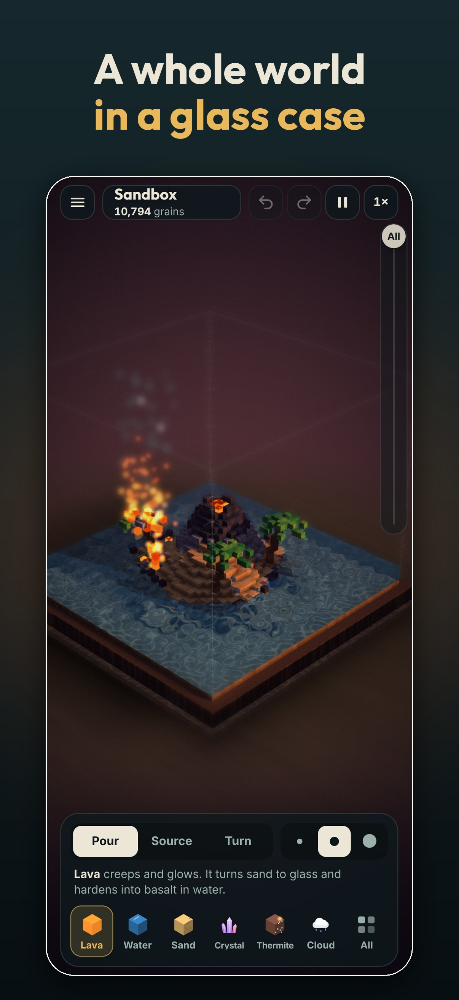
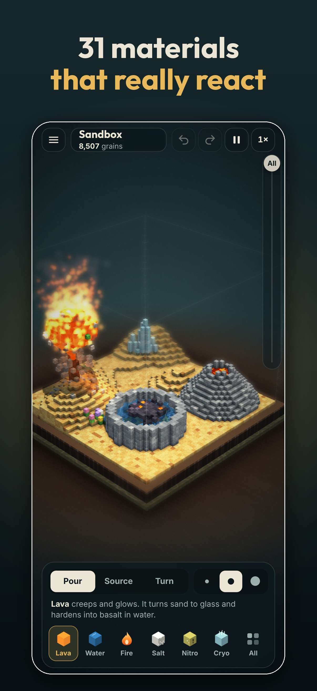
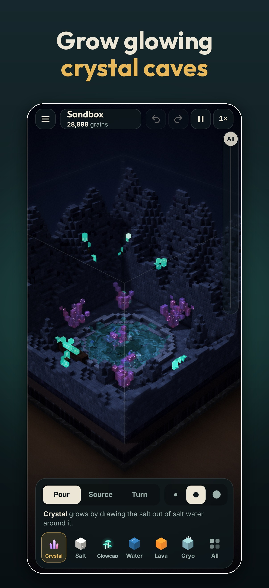
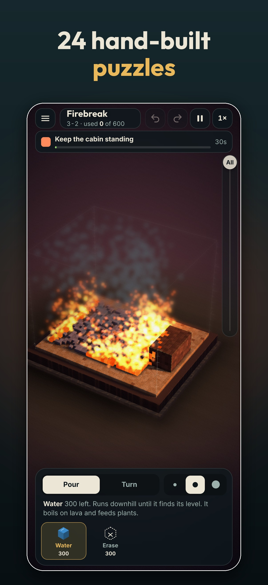
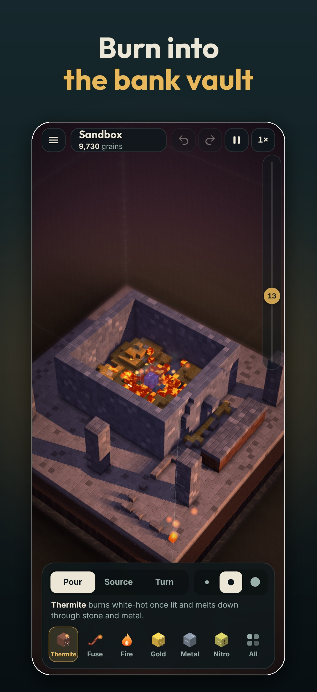
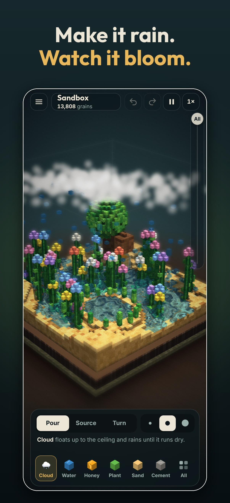

Support
Found a bug, stuck on a puzzle or have an idea for a new material? Email isammadi@bargainbinstudio.com and we'll get back to you, usually within a few days. It helps to include your iPhone model, iOS version, and what you were doing when it happened.
Quick answers
- Controls: drag on the case to pour. Use two fingers to turn the case and pinch to zoom. Tap All in the tray to see every material. The Source mode places a block that pours forever, and the slider on the right cuts away layers so you can see inside.
- Mistakes: undo and redo are at the top of the screen. The pause menu (top left) has New case, lighting, visual style and photo mode.
- Saves: your sandbox saves itself, and My cases keeps up to 12 saved cases on your device. Each case can be shared as a text code that starts with MTR1. Deleting the app deletes its saves.
- Stuck on a puzzle: open the pause menu and tap Show a hint. You can also skip a puzzle you're stuck on, because each puzzle opens when either of the two before it is solved.
- No sound: Matterarium follows the silent switch and plays alongside your own music. Volumes are in Settings.
- Running warm: set Settings → Graphics to Battery.
Privacy Policy
Last updated 24 October 2026
Matterarium is a single-player game. We do not collect, store or share any personal data.
- No accounts, sign-in, ads, analytics, tracking or in-app purchases.
- The game works fully offline and makes no network requests. Its graphics, fonts and sound are all made inside the app.
- Your cases, progress and settings stay on your device, in the app's own storage. They are never sent to us.
- If you email us for support, we use your email only to reply to you and delete it when the conversation is over.
- The game collects no information from anyone, including children.
If this policy ever changes, we will update this page and the date above. Questions: isammadi@bargainbinstudio.com.
Credits
Design, code, sound and music by Bargain Bin Studio. The typefaces are Inter and Outfit, both under the SIL Open Font License.
© 2026 Bargain Bin Studio